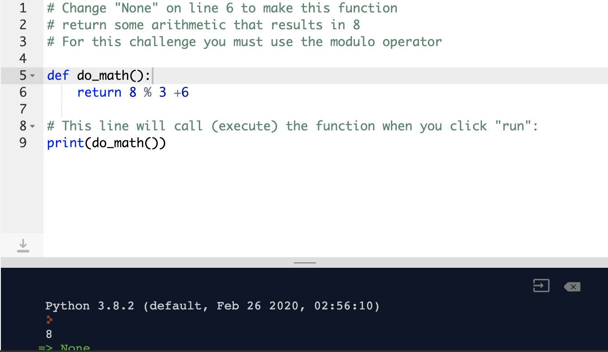

Notes
the print function
Print provides a way of outputting data
we use the
print("Display this message")
We’ll cover functions in much more detail throughout the course, but for now, all we need to know about is the print() function. The print() function, as its name suggests, displays information on the screen. It is used in command line (or terminal) or scripts, which is what we'll be working with throughout this module. So, you're about to become very familiar with the print() function! Let's have a look at it in action.
Here we are invoking the print() function. To do this, we use the function name, which in this instance is print followed by a pair of brackets or parentheses. Inside the parentheses, we’ll pass through an argument. When we want a function to act on a value, we put it inside the brackets. In this example, we are calling the print() function twice. Firstly, we pass in a value of "Hello world!", secondly we pass in multiple values. Have a play around with print() and see what happens. What happens if you try do maths, like: print(5 + 16)?
print("Hello world!")
print("Please", "say", "hello", "back!")
# Use the print() function to print the phrase "Python is awesome!" below this line
print('Python is awesome!')
Here we’re going to look at how we can do some simple arithmetic using Python. In the following example we’re just adding two numbers; 4 + 4
print(4 + 4)
no "" quotation marks are for strings.
Now that you know how to use the print() function, let's explore some of the other things Python can do. In Python, you can write your own functions, too! You do this using the def keyword (short for "define"). We'll cover this in more detail later, but for now just remember that each function will start by being defined with the def keyword, and should have a return statement at the end, which defines what its output will be. Remember that python can do arithmetic too! To demonstrate this, we've written a small function, do_math(), which currently returns nothing.
# Change "None" on line 5 to make this function
# return some arithmetic that results in 8
def do_math():
return 4 +4
# This line will call (execute) the function when you click "run":
print(do_math())
def do_math():
return 8 % 3 +6
# This line will call (execute) the function when you click "run":
print(do_math())

The symbols that we used in the previous examples should look pretty similar to what we are familiar with from the maths that we learned in school. We call these symbols operators, and on each side of the operator, we have operands. Operators perform operations on operands. For example, 5 * 53. Here we are using the multiplication operator * on the operands 5 and 53.
n addition to the four operators we looked at previously, we also have the following: ** % // We’ll leave Floor Division aside for now, and we’ll come back to it later in this lesson. Let’s take a look at the exponent and modulo operators. Exponent means to the power of. 5 ** 5 would be 5 to the power of 5. Which is the same as writing 5 * 5 * 5 * 5 * 5. Similarly, 2 ** 3 would result in 8 as 2 multiplied by 2 is 4 and 4 multiplied by 2 is 8.
print(2 ** 3)
The modulo operator will divide the first number by the second and return the remainder. If we have 5 / 5, the answer will be 1 but if we were to use 5 % 5 then the answer would be 0. Similarly, if we had 18 % 7 the answer would be 4 because 7 goes into 18 twice (7 + 7 = 14) with a remainder of 4 (18 – 14 = 4).
print(18 % 7) returns 4
The modulo operator can be used when we need to find out if numbers are odd or even, and we would also it use when working with time. If we wanted to convert minutes into hours and minutes. For example, we know that there are 60 minutes in an hour so if we wanted to figure out how many minutes are leftover once we convert 10900 minutes into hours we would use 10900 % 60

Creating a mathematical expression comprised of various operators will be subject to the operator precedence set of rules. These rules are used heavily in algebra. When working with a compound expression that is made up of multiple simpler expressions chained together, we need a way to determine which operations receive precedence. This operator precedence is determined using the BEMDAS order, which stands for Brackets, Exponents, Multiplication and Division, Addition and Subtraction. It is also sometimes referred to as BOMDAS, where the O stands for Orders.
print((1 + 1) ** 3)
equating too... add the brackets first then exponent.
So meaning 2 to the power of 3 which equals 8

Variables are analogous to “boxes” that we can use to store, modify and reference values in a computer program
Allows us to give our values meaning, as well as the ability to recall those values whenever needed
How do you use it?
Use variables to build up the data necessary for your computer program and persist it in memory
my_number = 5 print(my_number)
Throughout an application, we can create as many variables as we need. Although, there are a couple of rules that need to be followed when creating a variable. Variable names must start with a regular letter (lower or upper-case), and all further characters should be either letters or digits or underscores. There are many different ways in which we can name a variable. Some of the following can be used:
PEP8 recommends using lowercase variable names and any variable names that contain spaces should use underscores as spaces.
The means of storing and access values in variables using placeholder names
Allows us to build up more complex expressions by giving our operands more meaningful names
How do you use it?
Combine operators with variable based operands to perform arithmetic operations
print(first_number + second_number)
Now we’re just adding the values contained in two variables together. Notice how we’re adding two numbers together inside the function’s parentheses. Pieces of code that need to be evaluated are known as expressions Any expressions that we write inside of a function’s parentheses will be evaluated before the print function is invoked. The expression is evaluated, and the output is 15 meaning that 15 will be printed out.
The ability to overwrite existing variables
Allows us to make modifications to existing variables
we achieve this By merely using the same syntax that we used to declare the variable!
We know that when we declare a variable called my_number and then print it out, it will print out the value stored in that variable. Watch what happens when we declare a second variable called my_number and print out the value.
my_number = 5 my_number = 10 print(my_number)
results in printing out 10
This time the output is 10. This is called variable reassignment. We use the variable name of my_variable to reference the value stored in that same memory location and update it accordingly. Then by the time that we pass the variable to the print function to value of my_variable has been updated to the value of 10. Therefore we can re-assign values to a variable as we choose.
The ways these operators work is by combining the arithmetic operator with the = assignment operator, as in the image to the left. We can use these operators for some shorthand operations.
Here we’ve declared two variables. Then we have decided to use the addition and operator to add the value from variable_two to variable_one and assign the result to variable_one, which is 13. Notice how variable_two isn’t affected by this operation. This same logic can be used with all of the other arithmetic operators. Try out the different operators in the above Repl.it session.
Variables - Required: In the Variables unit of the Numbers, Operators, Variables & Types lesson you learned that in Python, you can assign values to a variable, which is like a container to hold your value in the computer's memory. Then, you can access that same value by accessing the variable. Here we've defined a small function, motivation(), which returns a variable called quote. The only problem is that quote hasn't been defined! Your challenge is to: Define quote by assigning it the following value: The secret of getting ahead is getting started.
def motivation():
# Define the quote variable here
quote = "The secret of getting ahead is getting started."
return quote
# Sample function call:
print(motivation())
A means of categorising our data
What does it do?
Provides a simple structure to the data that we store in memory
How do you use it?
By declaring variables!
integers or floats
In Python, there are two different types of numbers that we work with on a regular basis. Up until now, we’ve mostly been looking at whole numbers. In mathematical terms, these numbers are usually integers. In computer programming, however, an integer is called an int for short. The other type of numbers that Python offers is a floating point number, or float for short. A float is a number that is followed by a decimal point. For example, a float might look like 12.74 whereas an int might be just12 or 13, depending on whether you choose to round up or not!
The reason that we need to differentiate between the two different types of numbers is so that Python can inform the computer of how much memory will need to be allocated to store that value because ints require more memory than floats. Thankfully Python will mostly work within the confines of these two types of numbers; unlike other languages such as Java or C#, which have small ints, long ints, doubles and many more! Also, in a language like Java or C#, we would have to specify the type of variable that you wish to declare.
For example, if you wanted to declare an int in C or Java you would write something like this:
int my_number = 42;
We don’t need to do this in Python. The reason for this is that Python is what we call a dynamically typed language. Therefore we don’t have to specify the type because Python will make that determination for us at runtime (while the program is running), meaning that we can focus on writing code instead of making sure we get all of our types correct! This is often referred to as duck-typing. The philosophy here is: If it quacks, treat it as duck, otherwise, handle it differently. For example, if we have a variable that contains a number that doesn’t have a decimal point, treat it as an int; otherwise, if it does have a decimal point, treat it as a float. A language that requires us to specify the type of variable that we wish to declare is called a statically typed language. Java and C# are examples of this, but we’re not going to cover those here.
What is it?
The ability to work with different types of data What does it do?
Gives us the ability to use different types of numbers in mathematical operations
How do you use it?
By performing arithmetic operations on different types of data
So now that we’ve established that Python has different types of numbers, how do we work with them? First of all, let’s clear something up. In Python 3, whenever we use the division operator, the result will always be a float. For example:
15 / 3 = 5.0
Notice that the result here is 5.0. The point accommodates the possibility that the result might not be a whole number, which we can see in this example:
14 / 3 = 4.666666666666667
Now the result is 4.666666666666667. The number 3 doesn’t divide evenly into the number 14. The nearest number that it will divide into is 12 with a remainder of 2. Another way of wording this is that three goes into fourteen 4.666666666666667 times. If we were to use the modulo operator (%) here instead of the division operator (/), we would get a result of 2.
The ability to work with different types of data
What does it do?
Gives us the ability to use different types of numbers in mathematical operations
How do you use it?
By performing arithmetic operations on different types of data
But what if we wanted to do some division that just returns an int instead? In that case, we would use the floor division operator. Back in the Arithmetic Operators section, we saw a floor division operator that looked like this –//. It rounds the number down to the nearest whole number. For example:
14 // 3 = 4
As we can see, the result of 14 // 3 will return 4 (without any decimal points).
The ability to work with different types of data
What does it do?
Gives us the ability to different types of numbers in mathematical operations
How do you use it?
By performing arithmetic operations on different types of data
Now that that’s out of the way let’s look at how we can combine the two different numbers. Fortunately, Python is intelligent enough to know that floats and ints are numbers. It’s also smart enough to know that ints can’t contain decimal points. For this reason, if we add an int to a float, the result will be a float.
print(4 + 4.0)= 8.0
Even though 4.0 can be considered to be a whole number because it has a 0 after the decimal point, Python plays it safe and returns 8.0 anyway. Any arithmetic operation that involves an int and a float as its operands behaves the same. However, if we were to perform an arithmetic operation on two ints, then the result will be an int. Similarly, if we use two floats as our operands, then the result will be a float.
What does it do?
Converts from one currency to another
How do you use it?
We combine mathematical techniques to create useful formulae. We would use BOMDAS if we wanted to convert currencies.
Let’s say that 1 euro is equal to 1.11 in USD. To find out how many USD one would get for 25 euro, we would just multiply 25 by 1.11.
usd = 1.11 print(25 * usd)
The result here is 27.750000000000004. While this may be correct, it’s not very friendly. As we know, currency is rounded to two decimal places. In order to achieve this, we need to use the round function.
usd = 1.11 euro = 25 total_usd = round(euro * usd, 2) print(total_usd)
returns: 27.75
Here we’ve stored the converted and rounded value in a variable called total_usd. The first argument that we pass to the round function is the value that we need to be rounded, and the second argument is the number of decimal points that we want to round to. In this case, we want to round to two decimal places.
moon weight calculator
Will calculate how much you weigh in the moon’s lower gravity
Use multiplication to calculate weight based on known Earth to Moon gravity difference and your Earth weight.
The force of gravity on the moon is one-sixth or 16.5 times weaker than it is on earth. If we were to go to the moon, then we would weigh one-sixth of what we currently weigh here on Earth. So how would we calculate this? To calculate this, we need to multiply a value (weight) by 0.165.
In this example, if we weighed 75 KG here on planet Earth, we would weigh 12.38 KG on the moon!
print(round(75 * 0.165, 2)) = 12.38
Number Types - Required: You might recall learning in the Number Types lesson that there are two number types we'll work with quite a lot in python: int (integers/whole numbers) and float (decimals). Your challenge is to: Define a variable, my_int, which is an integer Define a variable, my_float, which is a float Change the function return_numbers() so that it returns them as a tuple (Google it, you'll need it later anyway!) Requirements: The tuple must contain the integer and the float, in that order.
def return_numbers():
# Define my_int and my_float here, then return them as a tuple:
my_int = 14
my_float = 12.5
return (my_int, my_float)